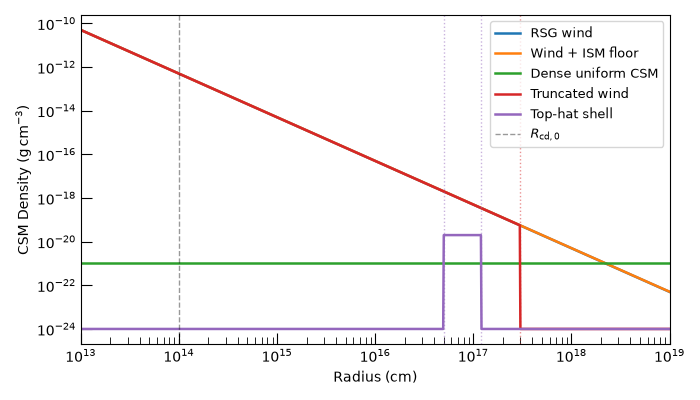
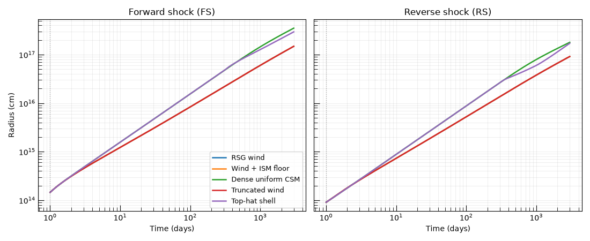
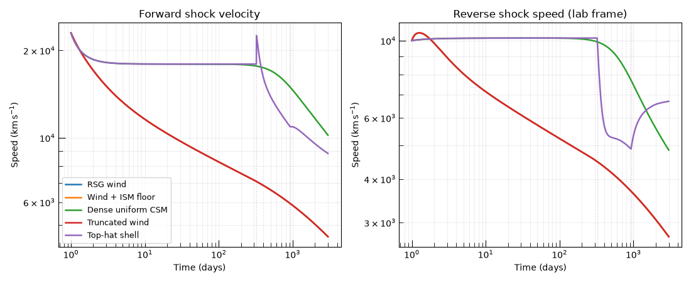
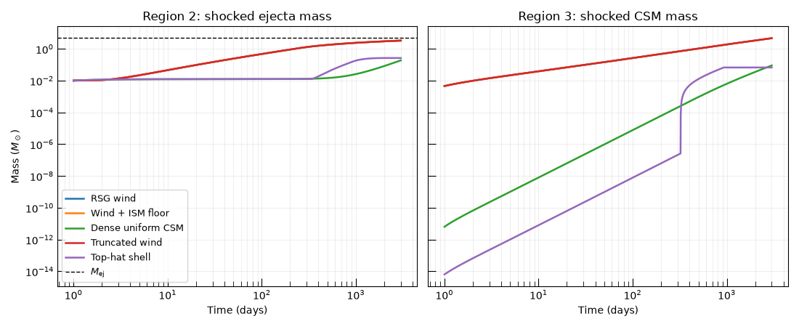

Note
Go to the end to download the full example code.
MechanicalShockEngine: Forward and Reverse Shocks in Different CSM Environments#
What this example does
This example launches the same supernova ejecta into five representative
circumstellar medium (CSM) profiles using the
MechanicalShockEngine and
compares the resulting two-shock structure across environments. Unlike a
thin-shell engine, the mechanical formulation tracks the forward shock,
contact discontinuity, and reverse shock separately, so we can see how CSM
density structure affects both shocks independently.
Why the mechanical engine?
The pressure-driven thin-shell engine collapses the shock system to a single
radius and velocity. The
MechanicalShockEngine retains
two finite-width regions:
Region 2 — shocked ejecta, between the reverse shock (RS) and the contact discontinuity (CD).
Region 3 — shocked CSM, between the CD and the forward shock (FS).
CSM density directly sets the ram pressure at the FS, which feeds through the CD pressure balance to modulate the RS. Dense or structured CSM therefore imprints signatures on the reverse shock that are invisible in a thin-shell treatment.
We compare five environments:
a steady red-supergiant wind (
WindCSMProfile),a wind with an outer ISM floor (
WindWithFloorCSMProfile),a dense uniform medium (
UniformCSMProfile),a sharply truncated wind followed by low-density ISM (
TruncatedWindCSMProfile),and a dense top-hat shell embedded in an ISM background (
ShellCSMProfile).
See also
- Numerical Shock Engines
Full API reference for the numerical shock engines.
- Theory: Numerical Shock Engines
Derivation of the governing ODE system.
MechanicalShockEngineFor a single-scenario walkthrough of the engine setup.
Setup#
from dataclasses import dataclass, field
import matplotlib.pyplot as plt
import numpy as np
from astropy import units as u
from trilobite.dynamics.profiles import (
BrokenPowerLawEjectaProfile,
ShellCSMProfile,
TruncatedWindCSMProfile,
UniformCSMProfile,
WindCSMProfile,
WindWithFloorCSMProfile,
)
from trilobite.dynamics.shocks import MechanicalShockEngine, make_homologous_stationary_sources
from trilobite.dynamics.shocks.numerical import MechanicalShockState
from trilobite.utils.plot_utils import set_plot_style
Scenario Container#
A small dataclass bundles the human-readable label, the unit-free CSM callable, a plot color, and optional vertical markers that flag physically important radii (e.g. wind termination, shell edges).
@dataclass
class CSMScenario:
label: str
rho_csm: callable
color: str
marker_radii: tuple = field(default_factory=tuple)
CSM Profile Definitions#
The five environments span a wide range of density structures:
RSG wind — a steady \(\dot{M} = 10^{-3}\,M_\odot\,\mathrm{yr}^{-1}\), \(v_w = 10\;\mathrm{km\,s^{-1}}\) wind giving \(\rho \propto r^{-2}\).
Wind + ISM floor — the same wind but with an ambient ISM density \(\rho_{\rm ISM} = 10^{-24}\;\mathrm{g\,cm^{-3}}\) that dominates beyond the wind radius where \(\rho_{\rm wind} < \rho_{\rm ISM}\).
Dense uniform CSM — a uniform medium at \(\rho_0 = 10^{-21}\;\mathrm{g\,cm^{-3}}\), representative of a confined pre-explosion shell or a very high mass-loss-rate wind blown into a slow-expanding HII region.
Truncated wind — the RSG wind outside a termination radius \(R_{\rm w} = 3\times10^{17}\) cm falls to the ISM floor, producing a sharp density drop and a corresponding shock re-acceleration.
Top-hat shell — a dense shell from \(5\times10^{16}\) to \(1.2\times10^{17}\) cm sitting in a low-density ISM, modeling a brief episode of intense pre-explosion mass loss.
M_dot = 1e-3 * u.M_sun / u.yr
v_wind = 10.0 * u.km / u.s
rho_ism = 1e-24 * u.g / u.cm**3
R_wind_trunc = 3e17 * u.cm
R_shell_in = 5e16 * u.cm
R_shell_out = 1.2e17 * u.cm
scenarios = [
CSMScenario(
label="RSG wind",
rho_csm=WindCSMProfile.as_optimized_callable(
mass_loss_rate=M_dot,
wind_velocity=v_wind,
),
color="C0",
),
CSMScenario(
label="Wind + ISM floor",
rho_csm=WindWithFloorCSMProfile.as_optimized_callable(
mass_loss_rate=M_dot,
wind_velocity=v_wind,
density_floor=rho_ism,
),
color="C1",
),
CSMScenario(
label="Dense uniform CSM",
rho_csm=UniformCSMProfile.as_optimized_callable(
rho_0=1e-21 * u.g / u.cm**3,
),
color="C2",
),
CSMScenario(
label="Truncated wind",
rho_csm=TruncatedWindCSMProfile.as_optimized_callable(
mass_loss_rate=M_dot,
wind_velocity=v_wind,
r_max=R_wind_trunc,
density_floor=rho_ism,
),
color="C3",
marker_radii=(R_wind_trunc,),
),
CSMScenario(
label="Top-hat shell",
rho_csm=ShellCSMProfile.as_optimized_callable(
r_inner=R_shell_in,
r_outer=R_shell_out,
shell_density=2e-20 * u.g / u.cm**3,
density_floor=rho_ism,
),
color="C4",
marker_radii=(R_shell_in, R_shell_out),
),
]
Visualize the CSM Density Profiles#
Before running the shock model, we plot the density structures to calibrate expectations. Sharp features here — the shell edges and the wind truncation — will leave corresponding kinks in the shock trajectories below.
set_plot_style()
r_plot = np.geomspace(1e13, 1e19, 1000) * u.cm
r_cgs = r_plot.to_value(u.cm)
fig, ax = plt.subplots(figsize=(7, 4))
for sc in scenarios:
ax.loglog(r_cgs, sc.rho_csm(r_cgs, 0.0), color=sc.color, lw=1.8, label=sc.label)
for r_marker in sc.marker_radii:
ax.axvline(r_marker.to_value(u.cm), color=sc.color, ls=":", lw=1.0, alpha=0.5)
ax.axvline(R_cd_0.to_value(u.cm), color="k", ls="--", lw=1.0, alpha=0.4, label=r"$R_{\rm cd,0}$")
ax.set_xlabel("Radius (cm)")
ax.set_ylabel(r"CSM Density ($\mathrm{g\,cm^{-3}}$)")
ax.set_xlim([1e13, 1e19])
ax.legend(fontsize=9)
plt.tight_layout()
plt.show()

Compute Shock Evolution#
For each scenario we:
Build the four upstream source callables with
make_homologous_stationary_sources().Derive self-consistent initial conditions with
infer_initial_conditions().Integrate the 8-component ODE with
compute_shock_properties().
The engine returns a MechanicalShockState
whose radius, radius_fs, and radius_rs fields are the CD, FS, and
RS radii respectively.
states: dict[str, MechanicalShockState] = {}
for sc in scenarios:
rho_1, u_1, rho_4, u_4 = make_homologous_stationary_sources(rho_ej, sc.rho_csm)
ic = engine.infer_initial_conditions(
R_cd_0=R_cd_0,
v_cd_0=v_cd_0,
t_0=t_0,
rho_1=rho_1,
rho_4=rho_4,
u_1=u_1,
u_4=u_4,
)
states[sc.label] = engine.compute_shock_properties(
time=time,
rho_1=rho_1,
rho_4=rho_4,
u_1=u_1,
u_4=u_4,
initial_conditions=ic,
t_0=t_0,
M1_total=M_ej,
)
Shock Radii: Forward Shock vs. Reverse Shock#
We plot the FS and RS radii on the same axes to show how the two shocks separate over time. The gap between FS and RS defines the extent of the two shocked regions (Region 3 and Region 2 respectively).
In a dense medium (uniform CSM) both boundaries decelerate strongly and remain close together — the thin-shell approximation holds well. In the truncated wind the FS accelerates after crossing \(R_{\rm w}\), but the RS, driven by pressure from Region 3, lags behind and only re-accelerates with a noticeable delay. For the top-hat shell the FS stalls as it sweeps up the dense shell, while the RS — still ploughing through fast ejecta — barely slows.
t_days = time.to_value(u.day)
fig, axes = plt.subplots(1, 2, figsize=(11, 4.5), sharey=True)
for sc in scenarios:
st = states[sc.label]
axes[0].loglog(t_days, st.radius_fs.to_value(u.cm), color=sc.color, lw=1.8, label=sc.label)
axes[1].loglog(t_days, st.radius_rs.to_value(u.cm), color=sc.color, lw=1.8, label=sc.label)
for ax in axes:
ax.axvline(t_0.to_value(u.day), color="k", ls=":", lw=1, alpha=0.3)
ax.set_xlabel("Time (days)")
ax.grid(alpha=0.2, which="both")
axes[0].set_ylabel("Radius (cm)")
axes[0].set_title("Forward shock (FS)")
axes[1].set_title("Reverse shock (RS)")
axes[0].legend(fontsize=9)
plt.tight_layout()
plt.show()

Forward and Reverse Shock Velocities#
Shock velocities expose the dynamical response to CSM structure more sharply than radii. The forward shock velocity traces the ram pressure at the FS face; the reverse shock velocity (plotted as its magnitude in the lab frame) traces the pressure fed back through the CD.
Key signatures:
Truncated wind: when the FS exits the wind at \(R_{\rm w} \approx 3\times10^{17}\) cm into low-density ISM the FS re-accelerates. The RS responds on the sound-crossing timescale of Region 3, producing a smoother and delayed re-acceleration.
Top-hat shell: the FS decelerates abruptly when it enters the shell at \(R_{\rm in}\), then re-accelerates as it exits. The RS deceleration is muted because Region 2 (shocked ejecta) partially absorbs the pressure spike through its own compression.
Dense uniform CSM: monotonic deceleration for both shocks; the RS slows faster because ejecta density also falls as the RS sweeps inward.
fig, axes = plt.subplots(1, 2, figsize=(11, 4.5))
for sc in scenarios:
st = states[sc.label]
axes[0].loglog(t_days, st.velocity_fs.to_value(u.km / u.s), color=sc.color, lw=1.8, label=sc.label)
axes[1].loglog(
t_days,
np.abs(st.velocity_rs.to_value(u.km / u.s)),
color=sc.color,
lw=1.8,
label=sc.label,
)
for sc in scenarios:
st = states[sc.label]
r_fs_cm = st.radius_fs.to_value(u.cm)
for r_marker in sc.marker_radii:
r_m = r_marker.to_value(u.cm)
idx = np.searchsorted(r_fs_cm, r_m)
if 0 < idx < len(t_days):
t_cross = np.interp(r_m, r_fs_cm[idx - 1 : idx + 1], t_days[idx - 1 : idx + 1])
for ax in axes:
ax.axvline(t_cross, color=sc.color, ls=":", lw=1.0, alpha=0.4)
for ax in axes:
ax.set_xlabel("Time (days)")
ax.set_ylabel(r"Speed ($\mathrm{km\,s^{-1}}$)")
ax.grid(alpha=0.2, which="both")
axes[0].set_title("Forward shock velocity")
axes[1].set_title("Reverse shock speed (lab frame)")
axes[0].legend(fontsize=9)
plt.tight_layout()
plt.show()

Shocked-Mass Evolution#
The swept-up mass in Region 3 (shocked CSM, \(M_3\)) measures how much circumstellar material the blast wave has processed. The shocked ejecta mass in Region 2 (\(M_2\)) tracks how deeply the reverse shock has penetrated into the ejecta.
For a pure wind \(M_3 \propto R_{\rm FS}\) because the column density along any radial path through a wind scales as \(A/r\). A uniform medium gives \(M_3 \propto R_{\rm FS}^3\). The top-hat shell produces a steep plateau in \(M_3\) while the shock is inside the shell, followed by a return to ISM-like growth.
fig, axes = plt.subplots(1, 2, figsize=(11, 4.5), sharey=True)
for sc in scenarios:
st = states[sc.label]
axes[0].loglog(t_days, st.mass_2.to_value(u.M_sun), color=sc.color, lw=1.8, label=sc.label)
axes[1].loglog(t_days, st.mass_3.to_value(u.M_sun), color=sc.color, lw=1.8, label=sc.label)
axes[0].axhline(M_ej.to_value(u.M_sun), color="k", ls="--", lw=1.0, label=r"$M_{\rm ej}$")
for ax in axes:
ax.set_xlabel("Time (days)")
ax.grid(alpha=0.2, which="both")
axes[0].set_ylabel(r"Mass ($M_\odot$)")
axes[0].set_title("Region 2: shocked ejecta mass")
axes[1].set_title("Region 3: shocked CSM mass")
axes[0].legend(fontsize=9)
plt.tight_layout()
plt.show()

Summary#
This example shows how the
MechanicalShockEngine resolves
the two-shock structure that a thin-shell engine cannot. The key takeaways
are:
CSM density sets FS deceleration, which is also visible in the thin-shell treatment.
CSM structure modulates the RS through pressure balance — a feature unique to the mechanical formulation. Dense or structured CSM forces the CD to decelerate, which in turn slows the FS–CD pressure difference and reduces the RS heating rate.
Shocked masses diverge between environments early — the ratio \(M_3 / M_2\) reaches order unity on timescales that depend sensitively on the CSM normalization, making it a useful proxy for inferring CSM parameters from observable signatures.
See also
Numerical Shock Engines — API reference for all numerical shock engines including the thin-shell alternatives.
Theory: Numerical Shock Engines — derivation of the governing ODEs.
sphinx_gallery_thumbnail_number = 4
Total running time of the script: (0 minutes 2.289 seconds)